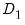
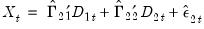

|
|
|
EViews offers three methods for estimating a single cointegrating vector: Fully Modified OLS (FMOLS), Canonical Cointegrating Regression (CCR), and Dynamic OLS (DOLS). Static OLS is supported as a special case of DOLS. We emphasize again that Johansen’s (1991, 1995) system maximum likelihood approach is discussed in “Vector Autoregression (VAR) Models”.The equation object is used to estimate a cointegrating equation. First, create an equation object, select Object/New Object.../Equation or Quick/Estimate Equation… then select COINTREG - Cointegrating Regression in the Method dropdown menu. The dialog will show settings appropriate for your cointegrating regression. Alternately, you may enter the cointreg keyword in the command window to perform both steps.There are three parts to specifying your equation. First, you should use the first two sections of the dialog (Equation specification and Cointegrating regressors specification) to specify your triangular system of equations. Second, you will use the Nonstationary estimation settings section to specify the basic cointegrating regression estimation method. Lastly, you should enter a sample specification, then click on OK to estimate the equation. (We ignore, for a moment, the options settings on the Options tab.)The first two sections of the dialog (Equation specification and Cointegrating regressors specification) are used to describe your cointegrating and regressors equations.The cointegrating equation is described in the Equation specification section. You should enter the name of the dependent variable,, followed by a list of cointegrating regressors,
, in the edit field, then use the Trend specification dropdown to choose from a list of deterministic trend variable assumptions (None, Constant (Level), Linear Trend, Quadratic Trend). The dropdown menu selections imply trends up to the specified order so that the Quadratic Trend selection depicted includes a constant and a linear trend term along with the quadratic.
If you wish to add deterministic regressors that are not offered in the pre-specified list to , you may enter the series names in the Deterministic regressors edit box.Cointegrating Regressors Specification section of the dialog completes the specification of the regressors equations.First, if there are anydeterministic regressors (regressors that are included in the regressors equations but not in the cointegrating equation), they should be specified here using the Additional trends dropdown menu or by entering regressors explicitly using the Additional deterministic regressors edit field.
Second, you should indicate whether you wish to estimate the regressors innovationsindirectly by estimating the regressors equations in levels and then differencing the residuals or directly by estimating the regressors equations in differences. Check the box for Estimate using differenced data (which is only relevant and only appears if you are estimating your equation using FMOLS or CCR) to estimate the regressors equations in differences.
Once you specify your cointegrating and regressor equations you are ready to describe your estimation method. The EViews equation object offers three methods for estimating a single cointegrating vector: Fully Modified OLS (FMOLS), Canonical Cointegrating Regression (CCR), and Dynamic OLS (DOLS). We again emphasize that Johansen’s (1991, 1995) system maximum likelihood approach is described elsewhere(“Technical Discussion”).The Nonstationary estimation settings section is used to describe your estimation method. First, you should use the Method dropdown menu to choose one of the three methods. Both the main dialog page and the options page will change to display the options associated with your selection.The FMOLS estimator employs preliminary estimates of the symmetric and one-sided long-run covariance matrices of the residuals. Let be the residuals obtained after estimating Equation (28.1). Themay be obtained indirectly as from the levels regressions

is the number of restrictions imposed by
. (You should bear in mind that restrictions on the constant term and any other non-trending variables are not testable using the theory underlying Equation (28.10).)
To estimate your equation using FMOLS, select Fully-modified OLS (FMOLS) in the Nonstationary estimation settings dropdown menu. The main dialog and options pages will change to show the available settings.By default, EViews will estimateand
using a (non-prewhitened) kernel approach with a Bartlett kernel and Newey-West fixed bandwidth. To change the whitening or kernel settings, click on the Long-run variance calculation: Options button and enter your changes in the sub-dialog.
In addition, you may use the Options tab of the Equation Estimation dialog to modify the computation of the coefficient covariance. By default, EViews computes the coefficient covariance by rescaling the usual OLS covariances using theobtained from the estimated
after applying a degrees-of-freedom correction. In our example, we will use the checkbox on the Options tab (not depicted) to remove the d.f. correction.
The estimated coefficients are presented in the middle of the output. Of central importance is the coefficient on LY which implies that the estimated cointegrating vector for LC and LY (1, -0.9875). Note that we present the standard error, t-statistic, and p-value for the constant even though they are not, strictly speaking, valid.Once you have estimated your equation using FMOLS you may use the various cointegrating regression equation views and procedures. We will discuss these tools in greater depth in (“Working with an Equation”), but for now we focus on a simple Wald test for the coefficients. To test for whether the cointegrating vector is (1, -1), select View/Coefficient Diagnostics/Wald Test - Coefficient Restrictions and enter “C(1)=1” in the dialog. EViews displays the output for the test:The t-statistic and Chi-square p-values are both around 0.17, indicating that the we cannot reject the null hypothesis that the cointegrating regressor coefficient value is equal to 1.
in Equation (28.11).
To estimate your equation using CCR, select Canonical Cointegrating Regression (CCR) in the Nonstationary estimation settings dropdown menu. The main dialog and options pages for CCR are identical to those for FMOLS.To continue with our consumption and disposable income example, suppose we wish to estimate the same specification as before by CCR, using prewhitened Quadratic-spectral kernel estimators of the long-run covariance matrices. Fill out the equation specification portion of the dialog as before, then click on the Long-run variance calculation: Options button to change the calculation method. Here, we have specified a (fixed lag) VAR(1) for the prewhitening method and have changed our kernel shape to quadratic spectral. Click on OK to accept the covariance optionsOnce again go to the Options tab to turn off d.f. correction for the coefficient covariances so that they match those from FMOLS. Click on OK again to accept the estimation options.A simple approach to constructing an asymptotically efficient estimator that eliminates the feedback in the cointegrating system has been advocated by Saikkonen (1992) and Stock and Watson (1993). Termed Dynamic OLS (DOLS), the method involves augmenting the cointegrating regression with lags and leads ofso that the resulting cointegrating equation error term is orthogonal to the entire history of the stochastic regressor innovations:
lags and
leads of the differenced regressors soaks up all of the long-run correlation between
and
, least-squares estimates of using Equation (28.15) have the same asymptotic distribution as those obtained from FMOLS and CCR.
To estimate your equation using DOLS, first fill out the equation specification, then select Dynamic OLS (DOLS) in the Nonstationary estimation settings dropdown menu. The dialog will change to display settings for DOLS.By default, the Lag & lead method is Fixed with Lags and Leads each set to 1. You may specify a different number of lags or leads or you can use the dropdown to elect automatic information criterion selection of the lag and lead orders by selecting Akaike, Schwarz, or Hannan-Quinn. If you select None, EViews will estimate SOLS.
 be the long-run covariance matrices computed using the residuals . Then we may define the modified data
be the long-run covariance matrices computed using the residuals . Then we may define the modified data .
. and
and  , it will be useful to define the scalar estimator
, it will be useful to define the scalar estimator conditional on . We may, if desired, apply a degree-of-freedom correction to
conditional on . We may, if desired, apply a degree-of-freedom correction to  .
.
 and
and  , and the no-d.f. correction option used in the calculation of the coefficient covariance. Also displayed is the bandwidth of 14.9878 selected by the Andrews automatic bandwidth procedure.
, and the no-d.f. correction option used in the calculation of the coefficient covariance. Also displayed is the bandwidth of 14.9878 selected by the Andrews automatic bandwidth procedure. conditional on
conditional on  . This statistic, which takes the value of 25.47 in this example, is the
. This statistic, which takes the value of 25.47 in this example, is the  employed in forming the coefficient covariances, and is obtained from the
employed in forming the coefficient covariances, and is obtained from the  and
and  used in estimation. Since we are not d.f. correcting the coefficient covariance matrix the reported here is not d.f. corrected.
used in estimation. Since we are not d.f. correcting the coefficient covariance matrix the reported here is not d.f. corrected. and
and  . Unlike FMOLS, CCR also requires a consistent estimator of the contemporaneous covariance matrix .
. Unlike FMOLS, CCR also requires a consistent estimator of the contemporaneous covariance matrix . using
using .
. is the number of coefficients in the cointegrating equation. This rule-of-thumb is a slightly modified version of the rule suggested by Schwert (1989) in the context of unit root testing. (We urge careful thought in the use of automatic selection methods since the purpose of including leads and lags is to remove long-run dependence by orthogonalizing the equation residual with respect to the history of stochastic regressor innovations; the automatic methods were not designed to produce this effect.)
is the number of coefficients in the cointegrating equation. This rule-of-thumb is a slightly modified version of the rule suggested by Schwert (1989) in the context of unit root testing. (We urge careful thought in the use of automatic selection methods since the purpose of including leads and lags is to remove long-run dependence by orthogonalizing the equation residual with respect to the history of stochastic regressor innovations; the automatic methods were not designed to produce this effect.)